An engineering publication library providing practical field insights, architectural deep dives, and deployment lessons learned.
The strategies and technical analyses shared across these articles are rooted in extensive field experience gained while leading the R&D, localized manufacturing, and deployment of pioneering NB-IoT smart water metering infrastructure across Malaysia and the ASEAN utility sector.
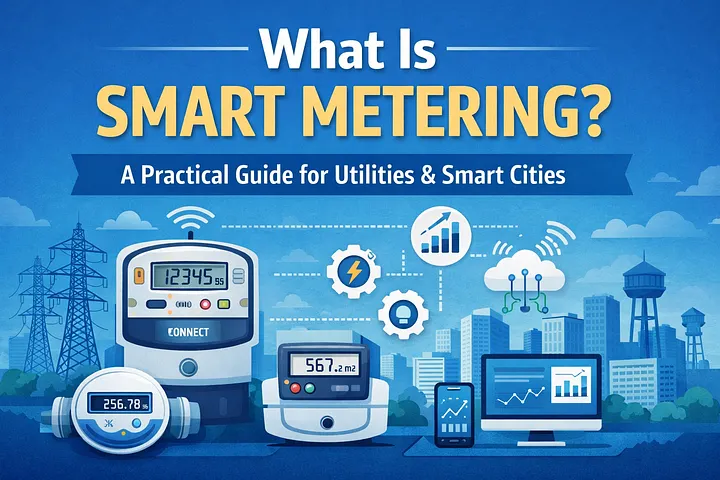
An introduction to smart metering technologies, explaining how they differ from conventional meters and the operational, customer service, and sustainability benefits they provide to utilities and smart city programs.
Read on Medium →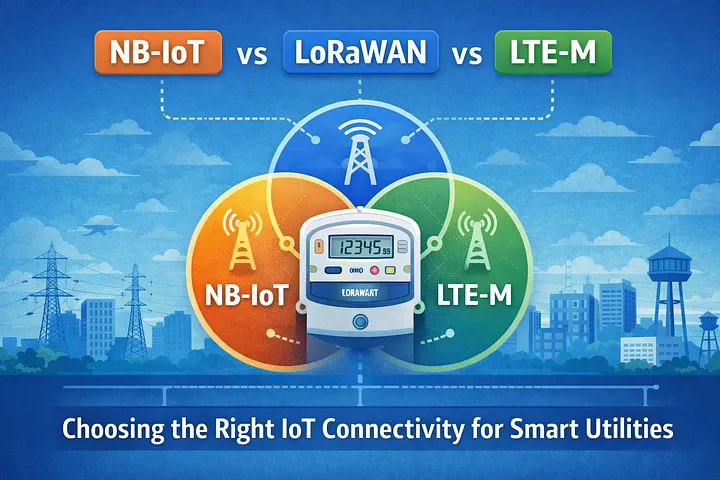
A practical comparison of leading LPWAN technologies used in utility metering deployments, covering coverage, battery life, scalability, deployment complexity, and long-term operational considerations.
Read on Medium →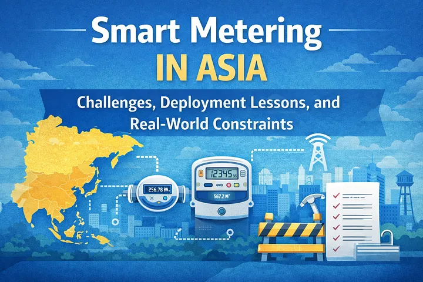
Examines the unique challenges faced by utilities across Asia, including infrastructure limitations, regulatory differences, communications constraints, and lessons learned from real-world deployments.
Read on Medium →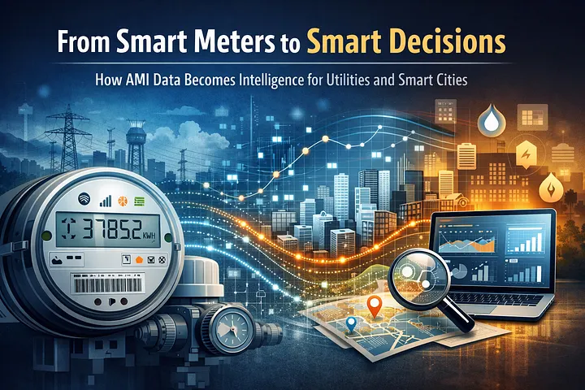
Explains how Advanced Metering Infrastructure transforms raw meter readings into actionable intelligence through analytics, operational insights, leak detection, and data-driven decision making.
Read on Medium →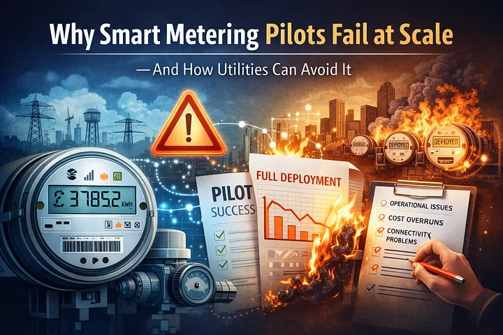
Explores why many successful pilot projects encounter difficulties during large-scale rollout and provides practical guidance for planning, governance, operations, and scalability.
Read on Medium →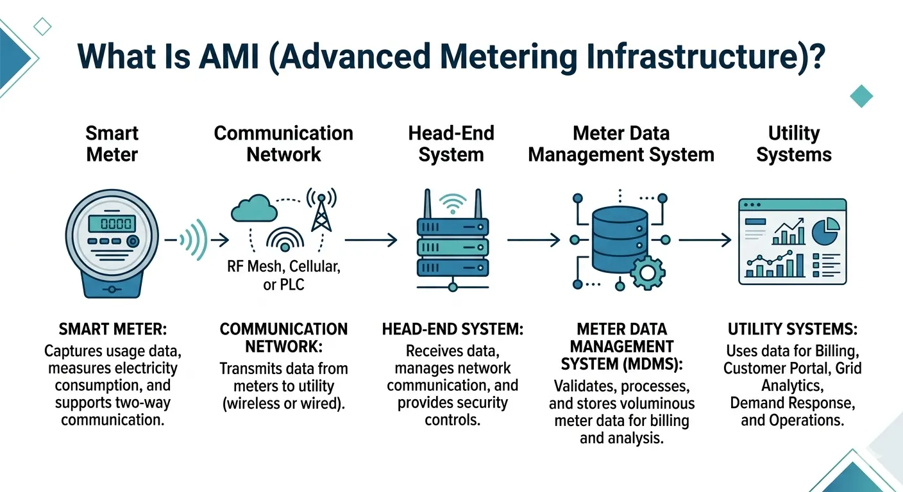
Provides a comprehensive overview of AMI architecture, including smart meters, communications networks, head-end systems, MDMS platforms, enterprise integration, and operational workflows.
Read on Medium →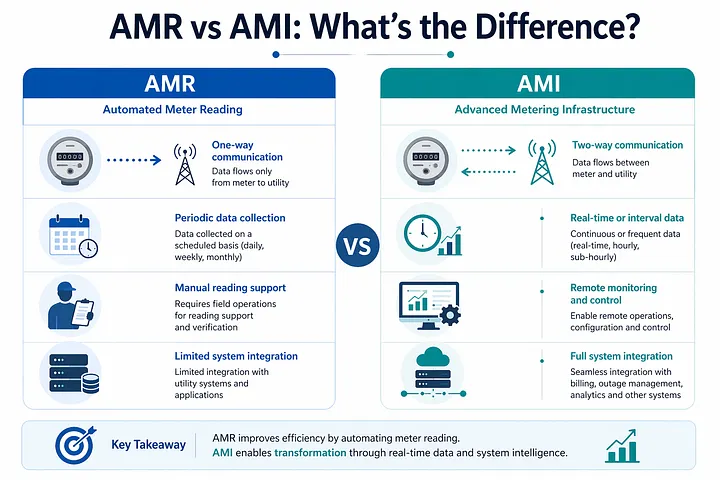
Compares Automated Meter Reading (AMR) and Advanced Metering Infrastructure (AMI), highlighting their technical differences, business value, limitations, and appropriate deployment scenarios.
Read on Medium →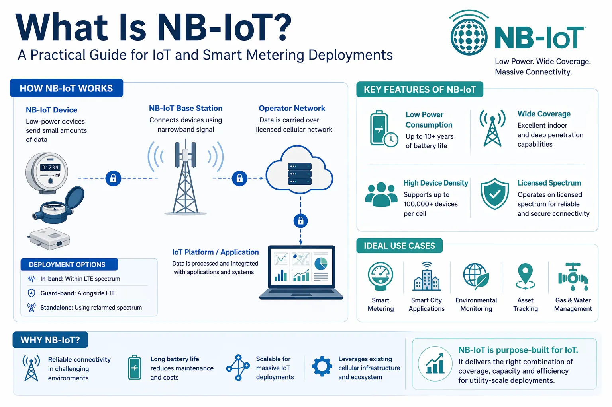
A detailed introduction to Narrowband IoT (NB-IoT), explaining network architecture, coverage characteristics, battery efficiency, deployment considerations, and utility use cases.
Read on Medium →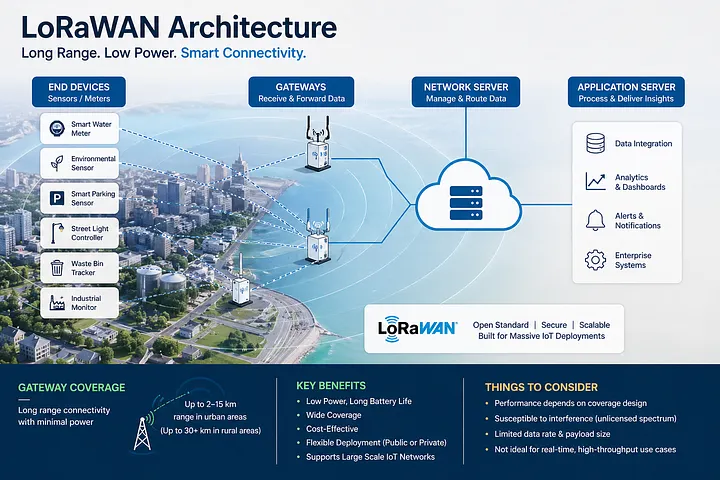
Examines how LoRaWAN networks operate, where they perform well, and the practical limitations encountered during utility, industrial, and smart city deployments.
Read on Medium →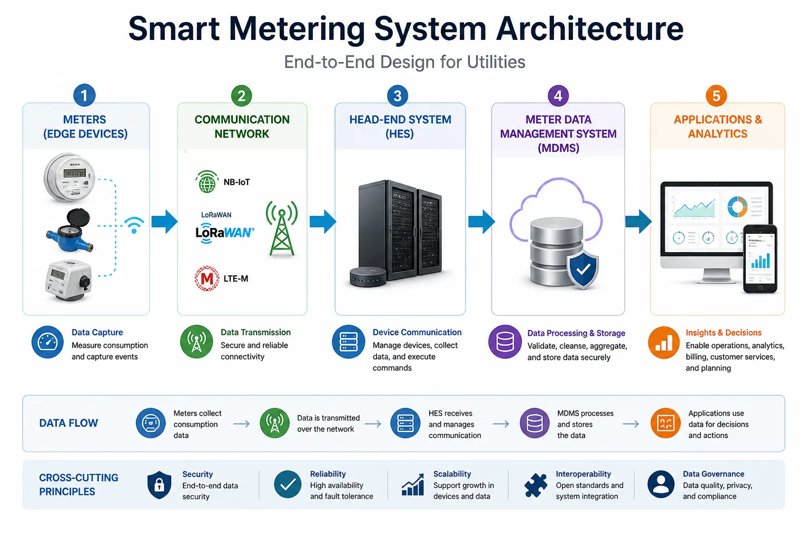
A system-level view of smart metering architecture, covering devices, communications, head-end systems, MDMS platforms, cybersecurity, integration, and operational management.
Read on Medium →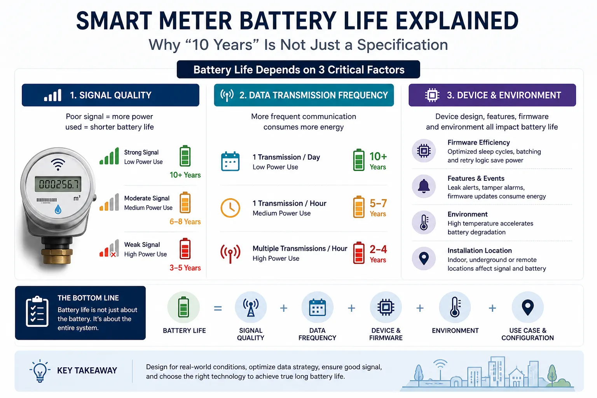
Explains the factors affecting battery performance in smart meters, including reporting frequency, communications technology, environmental conditions, and deployment practices.
Read on Medium →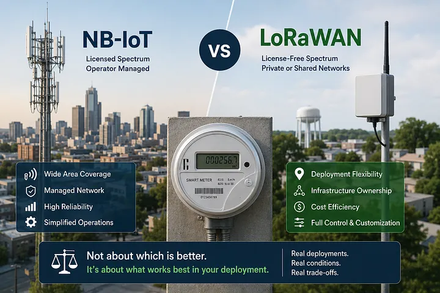
Moves beyond theoretical comparisons to examine the practical realities, trade-offs, and operational experiences of deploying NB-IoT and LoRaWAN in actual field environments.
Read on Medium →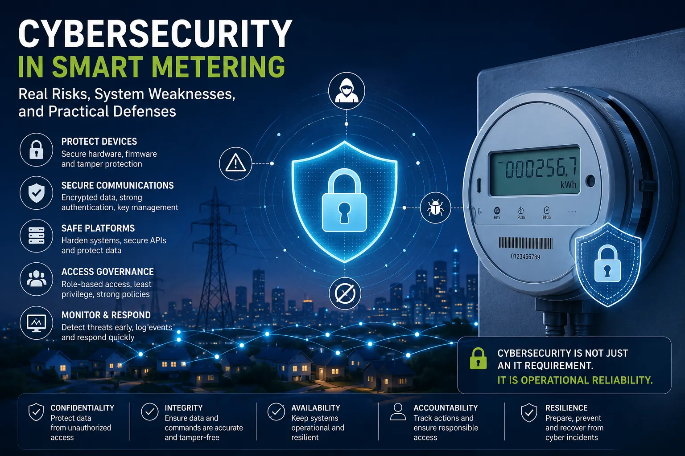
Reviews common cybersecurity threats affecting smart metering systems and outlines practical approaches to protecting devices, communications networks, backend systems, and utility operations.
Read on Medium →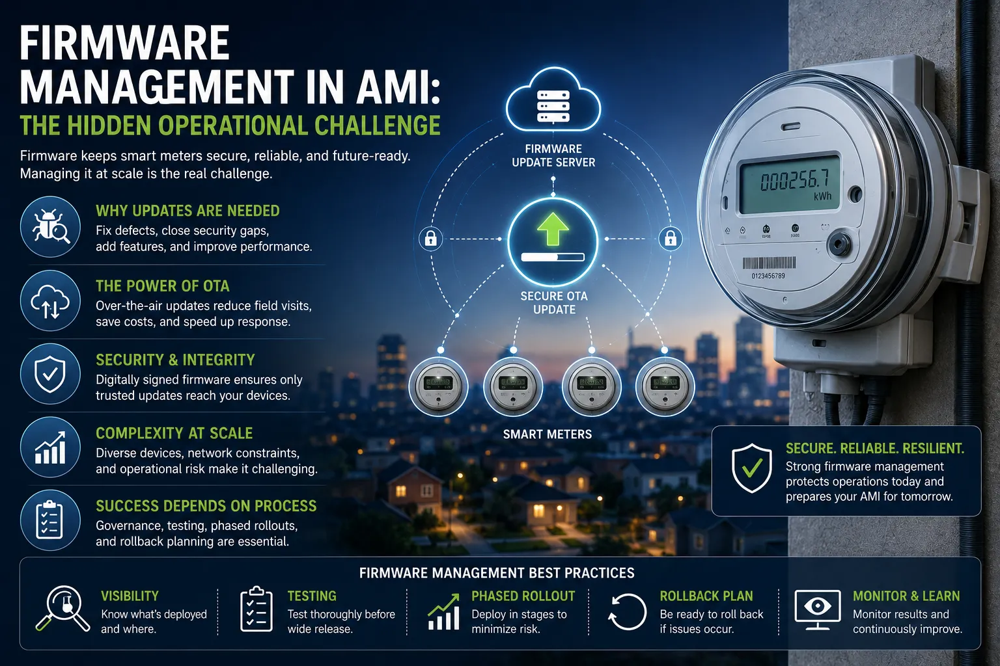
Discusses the complexities of managing firmware across large AMI deployments, including testing, version control, remote updates, risk mitigation, and operational governance.
Read on Medium →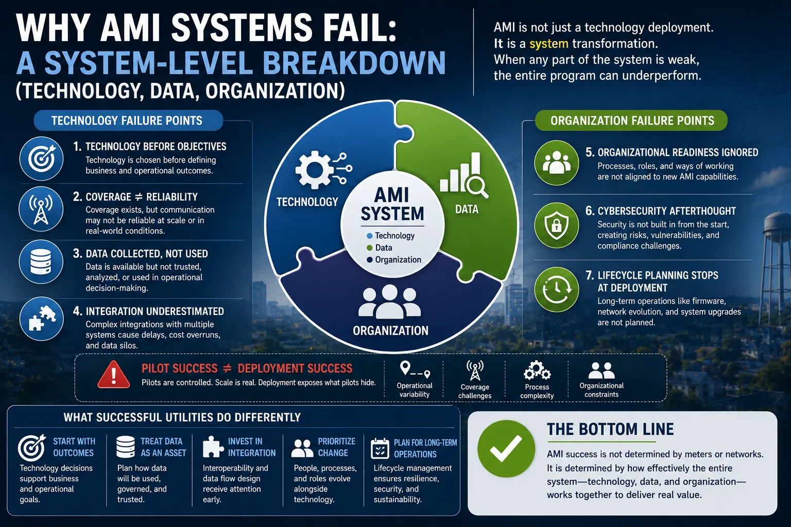
A practical analysis of why AMI initiatives fail to deliver expected business outcomes despite successful meter deployments. The article identifies critical gaps in system integration, data utilization, operational readiness, and organizational alignment that frequently undermine utility digital transformation programs.
Read on Medium →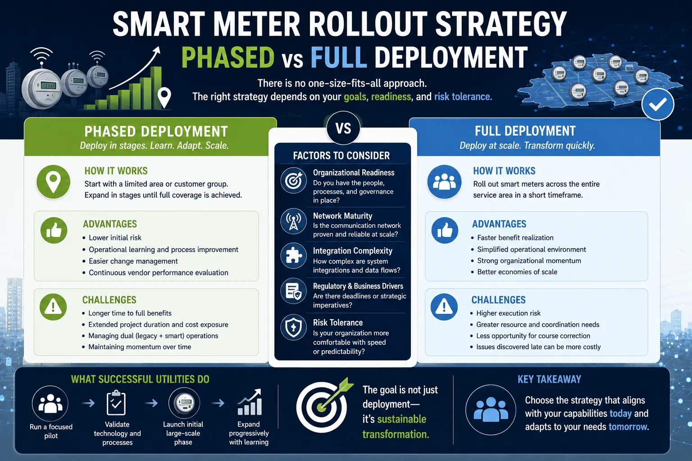
A comparison of phased versus full-scale AMI rollouts, analyzing the financial risks, deployment challenges, and key strategies for execution success.
Read on Medium →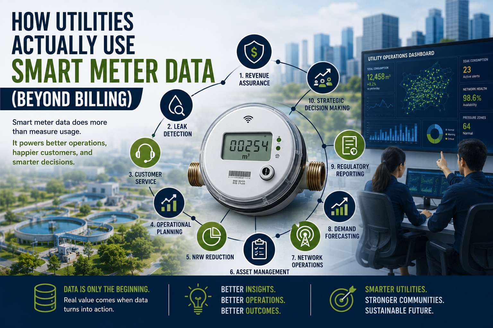
Go beyond simple billing. Discover how modern utilities harness advanced AMI data analytics to optimize grid operations, detect leaks, and improve asset health.
Read on Medium →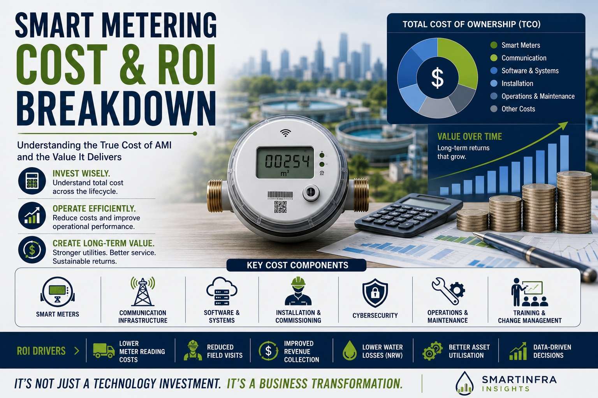
Demystify the true cost of AMI. Discover financial frameworks to analyze capital investments, hidden operational expenses, and total ROI for smart grids.
Read on Medium →More publications will be added as they are published.